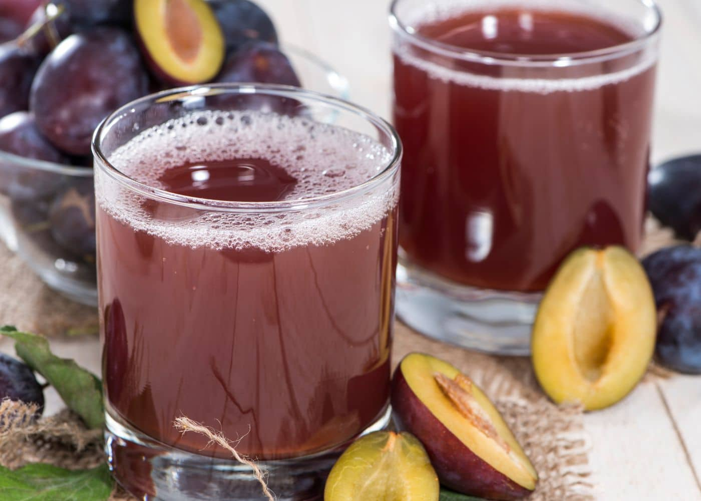

Syrniki recipe

Description
Here’s a simple recipe for plum-compote (Russian fuit lemonade):
- 500g plums, halved and pitted
- 1.5 liters of water
- 150g sugar (adjust to taste)
- 1 cinnamon stick (optional)
- 1-2 cloves (optional)
Steps
- In a large pot, bring water to a boil. Add sugar, stirring until fully dissolved.
- Add the plums, cinnamon stick, and cloves to the boiling water.
- Reduce the heat and simmer for 10–15 minutes, until the plums are tender but not falling apart.
- Remove from heat and let the compote cool.
- Serve chilled or at room temperature.
Enjoy these traditional dishes!